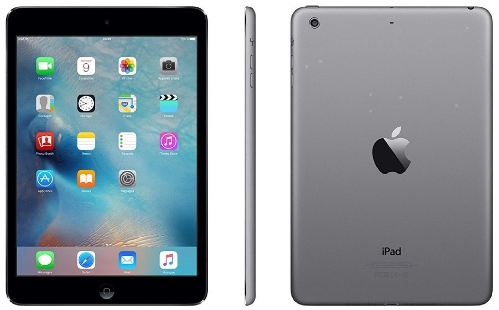
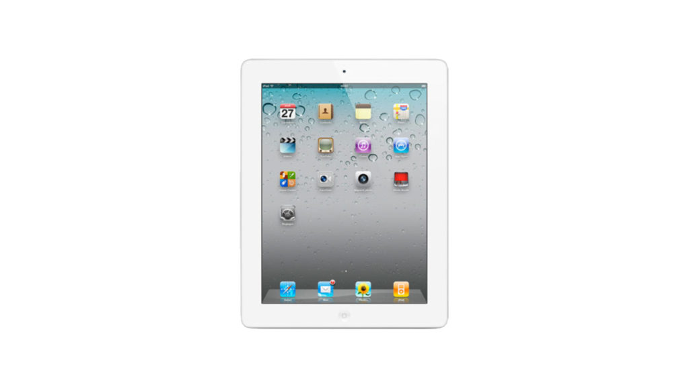
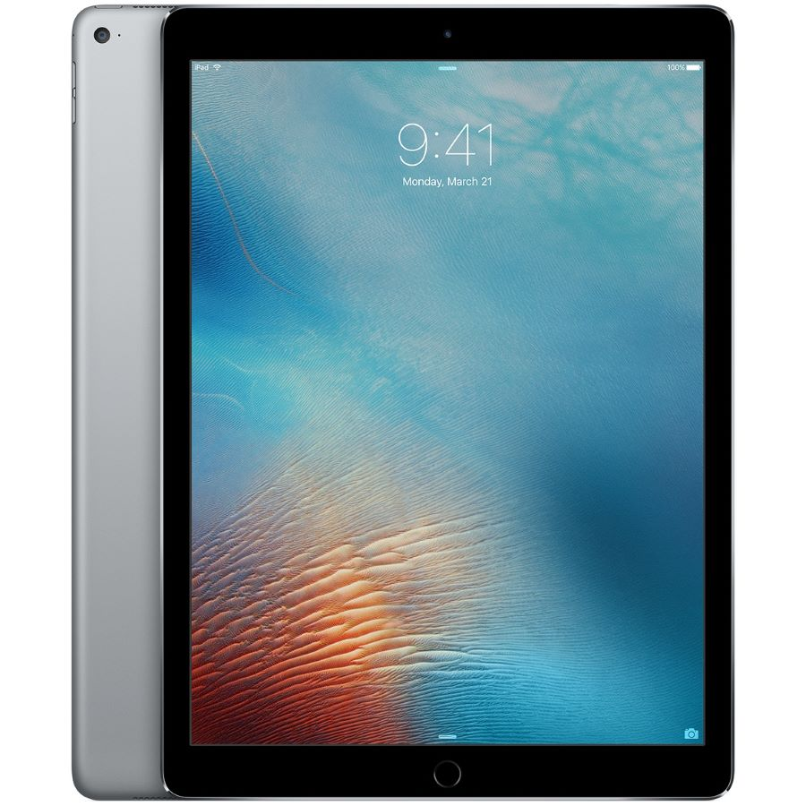
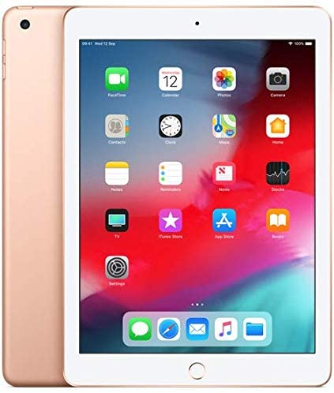

L'IPad fut commercialisé en 2010 avec comme idée de créer un ordinateur tactile portable

Pourtant contre toute attente elle a été énornement critiqué a cause de ces nombreux défauts
des bords énormes, un design pas fin du tout, pas de caméra à l’avant, des caractéristiques techniques tout juste bonnes pour le faire tourner
Mais une partie de ces défauts ont été ajustés avec l'arrivé de l'IPad 2 en 2011

Puis les deux d'après l IPad 3 et 4 on été des produits moyen sans amélioration révolutionnaire (Siri , plus de batterie)
entre temps temps l'IPad mini et air sont arrivé avec des tailles encore réduit mais une puissance toujours étonnante
Mais il y a eu une année qui a permis de retourner l'approche de l'IPad
Jusqu'a 2015 des petites améliorations sont faites avec le Touch ID des supports 4G amélioré
et en 2015 l'IPad Pro a 12.9 Pouces première génération sort un audio et processeur haute gamme

mais c'est surtout arrivé de l'Apple Pencil et d'un clavier des outils permettant de tranformer un IPad en vrai outil professionnel
Autre tournant pour la série iPad Pro qui reçoit un tout nouveau design borderless sur les
quatre côtés, éliminant de facto le bouton Touch ID au profit de Face ID.

Le port Lightning est remplacé par l’USB Type-C
domine l’appareil avec une compatibilité avec l’Apple Pencil 2.
C'est ainsi qu'apple a continué a travers le temps a développer a un de ces produits phare maintenant ,
qui conviens a n'importe quel personne les professionnels comme les enfants pour des jeux éducatifs